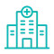
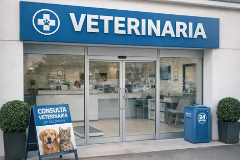
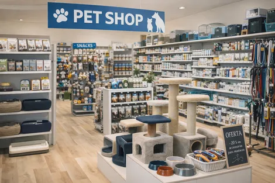
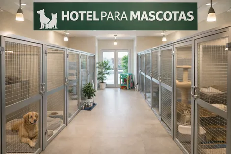
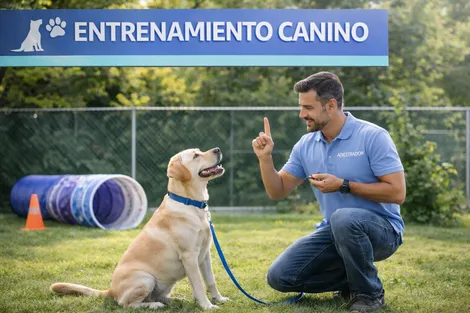
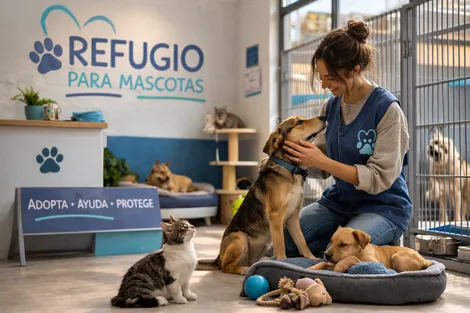

Conectamos a tu mascota con el mejor cuidado veterinario
Kerpet es la plataforma integral que conecta a dueños de mascotas con veterinarias y especialistas de confianza. Agenda citas, encuentra servicios cercanos y participa en una comunidad dedicada al bienestar animal.
Tipos de establecimientos
Clínicas veterinarias
Tiendas de alimento y accesorios
Cuidado y atención diaria
Adiestramiento y educación
Conócenos
¿Qué es Kerpet?
Kerpet es la plataforma integral diseñada para conectar a veterinarias, clínicas y negocios especializados en mascotas con dueños responsables que buscan servicios de confianza. Facilitamos el acceso a servicios veterinarios de calidad, la gestión de citas y la creación de una comunidad comprometida con el bienestar animal.
- Aumenta la visibilidad de tu establecimiento y atrae nuevos clientes.
- Agenda y gestiona citas veterinarias de manera digital y en tiempo real.
- Forma parte de una red de establecimientos dedicados al bienestar animal.
- Gana presencia en la comunidad digital de amantes de mascotas.
- Participa en eventos comunitarios: adopciones, carreras y más.
Nuestros Servicios
Todo lo que tu mascota necesita
en un solo lugar
Búsqueda de Veterinarias
Encuentra clínicas veterinarias cercanas según tu ubicación, especialidad y especie de tu mascota. Accede a perfiles completos con horarios, servicios y promociones.
Agenda de Citas
Agenda citas veterinarias en tiempo real con doctores según su disponibilidad y especialidad. Recibe confirmaciones y recordatorios automáticos.
Gestión de Mascotas
Administra el perfil completo de tus mascotas: nombre, raza, vacunas, historial médico, peso y estado de salud. Todo organizado en un solo lugar.
Eventos Comunitarios
Organiza y participa en eventos como adopciones, carreras, donaciones y reuniones de mascotas. Conecta con una comunidad apasionada por el bienestar animal.
Find My Pet
¿Perdiste a tu mascota? Reporta su desaparición y envía alertas geolocalizadas a usuarios cercanos. La comunidad de Kerpet te ayuda a reencontrarla.
Cotizaciones
Solicita cotizaciones de servicios y productos veterinarios directamente desde la plataforma. Recibe estimados claros antes de tomar una decisión.
Cómo Funciona
Tres pasos para cuidar
a tu mascota
Busca y Encuentra
Explora veterinarias, pet shops, hoteles y centros de adiestramiento cercanos a ti. Filtra por especialidad, ubicación y tipo de especie.
Agenda tu Cita
Selecciona al especialista ideal, elige el horario disponible que prefieras y confirma tu cita en segundos. Recibe recordatorios automáticos.
Cuida y Conecta
Gestiona la salud de tu mascota, participa en eventos comunitarios como adopciones y carreras, y únete a una comunidad que ama a los animales.
¿Tienes una veterinaria o negocio de mascotas?
Conecta tu establecimiento con Kerpet y llega a miles de dueños de mascotas que buscan servicios de confianza.
Contáctanos por WhatsApp+
Establecimientos
+
Mascotas registradas
+
Especialistas

+
Eventos comunitarios
Establecimientos
Conectamos a todos los establecimientos
dedicados al bienestar de las mascotas
Clínicas Veterinarias
Con Kerpet, las clínicas veterinarias pueden aumentar su visibilidad, atraer nuevos clientes y administrar fácilmente servicios, citas y doctores. Una sola plataforma para impulsar tu crecimiento y el bienestar animal.
- Veterinarios certificados en múltiples especialidades
- Servicio disponible las 24 horas para emergencias
- Gestión digital de citas y agenda en tiempo real
- Administración de sucursales y equipos

Tiendas de Mascotas (Pet Shops)
Únete a Kerpet y acerca tus productos a más dueños responsables. Ofrece mayor visibilidad, catálogos digitales y una nueva forma de conectar con clientes que aman a sus mascotas.
- Productos confiables para todas las mascotas
- Catálogo digital de alimentos y accesorios
- Apoyo a emprendedores del sector mascotas
- Promociones y campañas visibles en la app

Hoteles y Pensiones para Mascotas
Da a conocer tus servicios de hospedaje, conecta con dueños que buscan un lugar de confianza y asegura que cada mascota disfrute de un ambiente seguro y cómodo con Kerpet.
- Ambiente cómodo adaptado para cada especie
- Servicio profesional de cuidado y alimentación
- Seguridad garantizada las 24 horas
- Confianza respaldada por la comunidad Kerpet

Centros de Adiestramiento
Conéctate con dueños interesados en mejorar la conducta y bienestar de sus mascotas. Kerpet te ayuda a llevar tus servicios profesionales de adiestramiento a más personas.
- Entrenadores calificados con experiencia
- Espacios adecuados para entrenamiento
- Programas personalizados por raza
- Sesiones grupales de socialización

Refugios y Hogares Temporales
Da mayor visibilidad a las mascotas que buscan un nuevo hogar y suma el apoyo de una comunidad comprometida con el rescate y la adopción responsable.
- Personal dedicado al cuidado animal
- Procesos de adopción transparentes
- Apoyo comunitario para mascotas en necesidad
- Donaciones directas desde la plataforma

Preguntas Frecuentes
Todo lo que necesitas saber sobre Kerpet
¿Tienes alguna duda que no aparece aquí? Escríbenos directamente y te responderemos en menos de 24 horas.
Pregúntanos